|
|
| flatworms text index | photo index |
|
worms > Phylum Platyhelminthes >
Class
Turbellaria > Order Polycladida
|
| Bayer's flatworm Nymphozoon bayeri Family Pseudocerotidae updated Feb 2020 Where seen? This bold black-and-white flatworm is sometimes seen encountered on coral rubble near living reefs. Features: 5-8cm long. Usually with deep ruffles. Body dark grey or brown. Distinguished by wide black margin with inner bright white margin. Along the middle of the body, one wide black stripe bordered on both sides by a continuous white edge. Underside uniformly greyish with whitish margin next to black outer margin. It has a pair of pseudotentacles at the front made up of simple folded edges of the body, with white tips. Sometimes mistaken for the Brown-stripe flatworm which has a paler brown body and does not have inner bright white margins. |
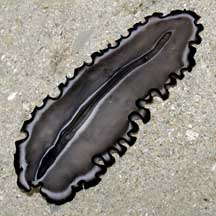 Pulau Hantu, Apr 06 |
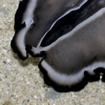 Pseudotentacles are simple folded edges of the body with white tips. |
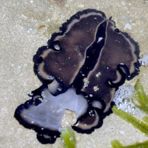 Chek Jawa, Jul 18 Photo shared by Dayna Cheah on facebook. |
*Species are difficult to positively identify without close examination.
On this website, they are grouped by external features for convenience of display.
| Bayer's flatworms on Singapore shores |
On wildsingapore
flickr
|
| Other sightings on Singapore shores |
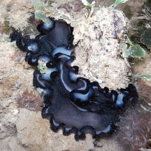 Chek Jawa, Jul 18 Photo shared by Jianlin Liu on facebook. |
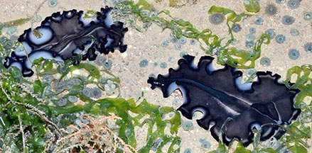 Beting Bronok, Jul 20 Photo shared by Loh Kok Sheng on facebook. |
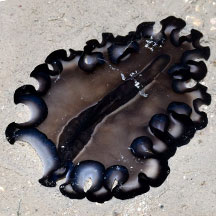 Beting Bronok, Jun 18 Photo shared by Loh Kok Sheng on facebook. |
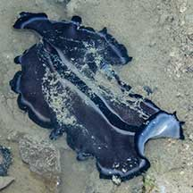 East Coast (PCN), May 21 Photo shared by Jonathan Tan on facebook. |
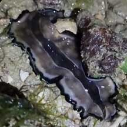 Sentosa Tg Rimau, May 22 Photo shared by Che Cheng Neo on facebook. |
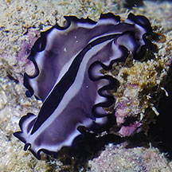 St John's Island. Aug 23 Photo shared by Richard Kuah on facebook. |
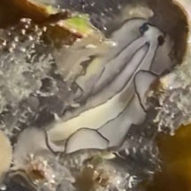 St John's Island. Aug 23 Photo shared by Kelvin Yong on facebook. |
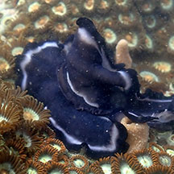 Pulau Semakau East, Jun 25 Photo shared by Loh Kok Sheng on facebook. |
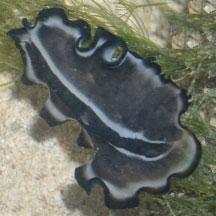 Terumbu Hantu, Aug 22 Photo shared by James Koh on facebook. |
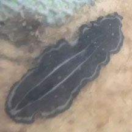 Terumbu Bemban, Aug 25 Photo shared by Isaac Ong on facebook. |
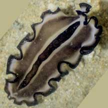 Raffles Lighthouse, Jan 22 Shared by Vincent Choo on facebook. |
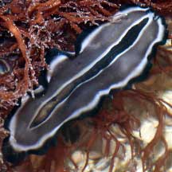 Pulau BIola, Jan 22 Shared by Loh Kok Sheng on facebook. |
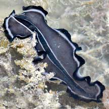 Pulau Berkas, Feb 22 Shared by Loh Kok Sheng on facebook. |
|
Acknowledgements
|